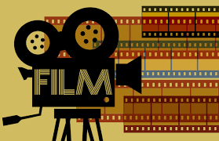

|  |
Aboutwelcome !Moviehead! Not sure what to watch ? stuck in the endless loop to find what to watch next ? Well You are in the right place then I will recommend you the top watchable movies you can binge watch |
A film, also called a movie, motion picture or moving picture, is a work of visual art that simulates experiences and otherwise communicates ideas, stories, perceptions, feelings, beauty, or atmosphere through the use of moving images. These images are generally accompanied by sound, and more rarely, other sensory stimulations. The word "cinema", short for cinematography, is often used to refer to filmmaking and the film industry, and to the art form that is the result of it. Source
Top Movies To bingeA film series or movie series (also referred to as a film franchise or movie franchise) is a collection of related films in succession that share the same fictional universe, or are marketed as a series. source
Top series To bingeA sitcom, clipping for situational comedy, is a genre of comedy centered on a fixed set of characters who mostly carry over from episode to episode. Sitcoms can be contrasted with sketch comedy, where a troupe may use new characters in each sketch, and stand-up comedy, where a comedian tells jokes and stories to an audience. Sitcoms originated in radio, but today are found mostly on television as one of its dominant narrative forms. Source
Top sitcom To binge